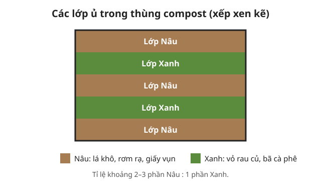

Tự làm phân compost từ rác nhà bếp
Tác giả: Ruler
Chuyên mục: Đất và phân bón hữu cơ — Cập nhật: 23/11/2026
Mỗi ngày, một gia đình thải ra vỏ rau, vỏ trái cây, bã trà, bã cà phê và nhiều loại rác hữu cơ khác. Phần lớn số rác đó bị bỏ vào thùng rác chung, trong khi nó có thể trở thành phân bón cho vườn rau trên sân thượng. Tự làm phân compost, còn gọi là phân trộn hay phân ủ, là cách biến rác nhà bếp thành đất mùn tơi xốp, giàu chất hữu cơ, để trộn vào đất trồng rau qua nhiều lứa.
Bài viết này hướng dẫn cách ủ compost tại nhà cho người mới, theo quy trình ba bước đã công bố trong hướng dẫn ủ rác làm phân compost tại nhà của Sở Khoa học và Công nghệ Ninh Bình: làm thùng ủ và chọn vị trí đặt thùng, phân loại rác và bỏ rác hữu cơ vào thùng, rồi theo dõi quá trình ủ cho tới khi rác thành phân. Bài viết cũng giải thích cách cân bằng hai nhóm nguyên liệu, gọi là nguyên liệu Nâu và nguyên liệu Xanh, và cách xử lý khi đống ủ có mùi hôi hay ruồi. Compost chỉ dùng được khi đã hoai hoàn toàn. Compost chưa hoai, còn ướt và nặng mùi, thì chưa đạt yêu cầu và không nên bón cho rau ăn.
Compost là gì, và vì sao nên tự ủ
Compost là sản phẩm cuối cùng của quá trình vi sinh vật phân hủy các vật liệu hữu cơ. Khi ủ đúng cách, rác nhà bếp và lá khô sẽ biến thành một chất tơi xốp, hạt mịn, không còn mùi hôi thối và có màu nâu đen. Chất này trộn vào đất sẽ làm đất tơi xốp hơn, giữ ẩm tốt hơn và giàu chất hữu cơ hơn.
Tự ủ compost có ba lợi ích rõ ràng cho người trồng rau tại nhà. Thứ nhất, bạn có phân hữu cơ dùng dần mà không cần mua thêm. Thứ hai, bạn giảm lượng rác hữu cơ phải bỏ đi mỗi ngày. Thứ ba, bạn hiểu rõ phân của mình được làm từ thứ gì, vì bạn tự tay phân loại nguyên liệu đầu vào. Bài viết không khẳng định compost tự làm tốt hơn mọi loại phân mua sẵn, vì chất lượng compost phụ thuộc rất nhiều vào nguyên liệu và cách ủ của từng nhà. Bài viết chỉ hướng dẫn cách ủ sao cho mẻ phân đạt yêu cầu cơ bản: tơi xốp, hạt mịn, không mùi hôi thối và có màu nâu đen.
Hai nhóm nguyên liệu: Nâu và Xanh
Người làm compost thường chia nguyên liệu thành hai nhóm, gọi là nguyên liệu Nâu và nguyên liệu Xanh. Hiểu hai nhóm này là chìa khóa để đống ủ không bị bốc mùi.

Nguyên liệu Nâu là những thứ khô, giàu carbon, có tác dụng tạo độ tơi xốp và cung cấp năng lượng cho vi sinh vật. Ví dụ như lá cây khô, cành cây vụn, bìa carton không có mực in, lõi giấy vệ sinh hay mùn cưa. Nhóm này khô và nhẹ, giúp đống ủ thoáng khí.
Nguyên liệu Xanh là các loại rác thải nhà bếp tươi, ẩm và giàu nitơ. Đây là nguồn thức ăn chính giúp vi sinh vật sinh sôi và đẩy nhanh quá trình phân hủy. Vỏ rau củ quả, bã trà, bã cà phê, cỏ tươi và hoa héo đều thuộc nhóm này. Nhóm này ẩm và nặng, nếu chỉ ủ toàn nguyên liệu Xanh thì đống ủ sẽ bí, ướt và bốc mùi.
Một công thức được nhiều người áp dụng, được nêu trong hướng dẫn làm phân bón hữu cơ từ tái chế, là trộn nguyên liệu theo tỉ lệ khoảng 2 đến 3 phần Nâu cho mỗi 1 phần Xanh. Bạn không cần cân đo chính xác từng gam, chỉ cần ước lượng bằng mắt. Hãy bắt đầu bằng cách lót một lớp vật liệu Nâu xuống đáy thùng để tạo độ thoáng, rồi rải một lớp vật liệu Xanh lên trên, cứ tiếp tục xen kẽ một lớp Nâu và một lớp Xanh cho tới khi thùng đầy.
Bảng dưới đây tổng hợp từ hai nguồn đã dẫn. Bảng này giúp bạn phân loại nhanh trước khi bỏ rác vào thùng ủ.
| Nhóm | Dùng được | Không dùng |
|---|---|---|
| Nâu (khô, giàu carbon) | Lá khô, cành vụn, bìa carton không mực in, mùn cưa, rơm rạ, cỏ khô | Giấy bóng, giấy có mực in đậm, gỗ đã sơn |
| Xanh (tươi, giàu nitơ) | Vỏ rau củ quả, bã trà, bã cà phê, cỏ tươi, hoa héo, thức ăn thừa thực vật | Thịt, cá, dầu mỡ, thức ăn mặn nhiều, xương lớn |
| Không bỏ vào thùng ủ | — | Lá bạch đàn, lá tràm, lá sả tươi, vỏ cam, vỏ quýt |
Lưu ý ở dòng cuối cùng là lưu ý trong hướng dẫn của Sở Khoa học và Công nghệ Ninh Bình: không đưa vào thùng ủ lá bạch đàn, lá tràm, lá sả tươi, vỏ cam và vỏ quýt, vì các loại này chứa tinh dầu làm hại đến sự phát triển của vi sinh vật. Rác vô cơ như vỏ ruột xe, sành sứ, gạch vỡ, thủy tinh, thân và cát cũng không được dùng để ủ phân, vì chúng không phân hủy được.
Bước 1: Làm thùng ủ và chọn vị trí đặt thùng
Bạn có thể mua thùng ủ compost chuyên dụng, hoặc tự làm thùng ủ từ thùng nhựa cũ, thùng sơn cũ hay thùng xốp. Điều quan trọng nhất là thùng ủ phải thoáng khí, vì vi sinh vật hiếu khí cần oxy để hoạt động. Nếu dùng thùng nhựa hay thùng xốp, hãy đục nhiều lỗ nhỏ xung quanh thành thùng và dưới đáy để không khí lưu thông và nước thừa thoát ra ngoài, tránh tình trạng úng nước gây thối rữa và bốc mùi.
Theo hướng dẫn của Sở Khoa học và Công nghệ Ninh Bình, thùng ủ bằng nhựa, hình tròn, dung tích 160 lít được bán phổ biến tại các chợ. Với thùng nhựa, vách thùng khoan nhiều lỗ nhỏ cách nhau 10–15 cm đều nhau. Hai bên thành thùng gần mép đáy thùng được khoan 2 cửa vuông khoảng 20–30 cm vuông để lấy phân. Con số 160 lít là dung tích tham khảo cho thùng ủ ngoài vườn. Nếu bạn ở chung cư và chỉ có ban công nhỏ, hãy dùng thùng nhỏ hơn, nhưng vẫn giữ nguyên tắc đục lỗ thoáng khí và có cửa lấy phân ở phía dưới.
Vị trí đặt thùng ủ cũng quan trọng. Hãy đặt thùng ở nơi râm mát, cách xa nguồn nước sinh hoạt, và đặt chậu nhựa bên dưới để thu nước rỉ từ rác. Đừng đặt thùng ủ ngay cạnh cửa sổ phòng ngủ hay chỗ ngồi ăn, vì đống ủ đang hoạt động có thể có mùi nhẹ trong những ngày đầu. Đặt thùng ở góc sân thượng hay góc ban công khuất gió là hợp lý.
Bước 2: Phân loại rác và bỏ rác vào thùng
Trước khi bỏ rác vào thùng, hãy phân loại rác hữu cơ và rác vô cơ. Rác hữu cơ là các loại rác phân hủy nhanh như các loại rau, trái cây, rơm, các loại lá non, thực phẩm và phân gia súc. Rác vô cơ là các loại rác khô, khó phân hủy, không được dùng để ủ phân.
Hãy cắt nhỏ vỏ rau củ quả trước khi bỏ vào thùng, vì miếng nhỏ sẽ phân hủy nhanh hơn miếng lớn. Rải rác thành từng lớp xen kẽ Nâu và Xanh như đã nói ở trên, đừng đổ toàn bộ rác Xanh vào một lúc rồi mới phủ lá khô lên trên. Mỗi lần thêm rác mới, hãy phủ thêm một lớp lá khô hoặc rơm rạ lên trên, để đống ủ không bị hở mặt và ít thu hút ruồi.
Bạn cũng có thể bổ sung chế phẩm vi sinh để quá trình ủ nhanh hơn. Theo hướng dẫn của Sở Khoa học và Công nghệ Ninh Bình, bạn rải và trộn đều 0,5–1 kg chế phẩm EM FERT-1 vào rác, cho rác vào thùng để ủ, rồi đảo trộn và kiểm tra nhiệt độ. Liều lượng này là liều tham khảo trong hướng dẫn đó, cho thùng ủ dung tích lớn. Nếu bạn dùng thùng nhỏ hơn, hãy đọc kỹ hướng dẫn trên bao bì chế phẩm mình mua, vì mỗi sản phẩm có liều lượng khác nhau.
Bước 3: Theo dõi quá trình ủ
Kiểm tra độ ẩm
Độ ẩm là yếu tố quyết định đống ủ có thành công hay không. Theo hướng dẫn của Sở Khoa học và Công nghệ Ninh Bình, bạn kiểm tra độ ẩm bằng cách bóp một nắm rác trong tay. Nếu bóp thấy nước rỉ ra ngoài kẽ tay là thừa nước, phải bổ sung thêm lá cỏ khô và rơm rạ để điều chỉnh độ ẩm. Nếu bóp thấy rác dính chặt thì độ ẩm đạt yêu cầu. Hướng dẫn này cũng nêu rằng độ ẩm cần duy trì ở mức khoảng 60%, và khi đảo phân mà thấy phân bị khô thì cần bổ sung thêm nước bằng cách tưới để độ ẩm luôn đạt mức đó.
Cách kiểm tra bằng tay này rất thực tế cho người mới, vì bạn không cần mua dụng cụ đo độ ẩm. Hãy kiểm tra độ ẩm mỗi khi bạn thêm rác mới hoặc đảo phân. Đống ủ quá khô thì vi sinh vật hoạt động chậm, đống ủ quá ướt thì vi sinh vật thiếu oxy và bốc mùi.
Đảo trộn
Sau khoảng 10 ngày, bạn đảo phân và trộn đều rác trong thùng một lần. Khi đảo, hãy đảo từ trong ra ngoài và đảo từ ngoài vào trong để các vật liệu được trộn đều. Đảo trộn giúp oxy vào đều trong đống ủ, và giúp phần rác ở ngoài cũng được phân hủy như phần rác ở giữa. Nếu bạn không đảo, phần rác ở giữa có thể nóng và phân hủy nhanh, trong khi phần rác ở ngoài vẫn còn nguyên.
Khi nào thì compost đã hoai
Theo hướng dẫn của Sở Khoa học và Công nghệ Ninh Bình, sau khoảng 30 ngày, rác sẽ phân hủy thành phân compost. Sau 30 ngày, lớp phân bên dưới đáy thùng sẽ phân hủy trước. Bạn lấy phân ra từ hai cửa bên dưới thùng. Phân đạt yêu cầu thì tơi xốp, hạt mịn, không có mùi hôi thối và có màu nâu đen. Nếu phân lấy ra bị ướt và chưa mịn thì chưa đạt yêu cầu. Hãy bỏ phần phân này ủ trở lại vào thùng và trộn chung với rơm rạ, lá cây khô hoặc tro bếp để giảm độ ẩm.
Con số 30 ngày là khoảng thời gian tham khảo trong hướng dẫn đó, cho thùng ủ dung tích lớn và có bổ sung chế phẩm vi sinh. Thùng ủ nhỏ ở ban công, trời lạnh hay nguyên liệu nhiều cành cứng có thể cần thời gian lâu hơn. Đừng vội dùng phân khi phân còn ướt và nặng mùi, vì phân chưa hoai có thể làm cây non bị nóng rễ và thu hút ruồi.
Sau khi lấy phân ra khỏi thùng, bạn nên để phân phơi gió 1–2 ngày để giảm nhiệt độ rồi mới đưa vào bón cho cây trồng. Đây cũng là lưu ý trong hướng dẫn của Sở Khoa học và Công nghệ Ninh Bình.
Xử lý khi đống ủ có mùi hôi và ruồi
Đống ủ có mùi hôi thường do thừa nước, thiếu oxy hoặc quá nhiều nguyên liệu Xanh mà thiếu nguyên liệu Nâu. Cách xử lý, theo hướng dẫn của Sở Khoa học và Công nghệ Ninh Bình, là rải một lớp đất mỏng khô hoặc rơm rạ, lá cỏ khô lên bề mặt đống ủ, hoặc dùng tro bếp rải lên bề mặt để giảm mùi hôi và ruồi, sau đó tiếp tục bổ sung thêm rác và tưới thêm vi sinh lên bề mặt. Không nên bổ sung thêm nước vào thùng rác khi đống ủ đã có mùi hôi.
Bạn cũng nên kiểm tra lại lỗ thoát nước ở đáy thùng. Nếu nước rỉ không thoát ra được, nước sẽ đọng lại dưới đáy thùng và làm phần rác dưới đáy thối rữa. Hãy kê thùng lên gạch, đặt chậu hứng nước rỉ bên dưới, và đục thêm lỗ thoát nước nếu cần.
Ruồi xuất hiện khi mặt đống ủ hở ra ngoài và có thức ăn tươi. Hãy luôn phủ một lớp lá khô hoặc đất mỏng lên trên mỗi lần thêm rác mới, đậy nắp thùng kín nhưng vẫn có lỗ thoáng khí, và đừng bỏ thịt, cá hay dầu mỡ vào thùng ủ.
Cách dùng compost cho rau
Compost đã hoai có thể dùng theo ba cách. Cách thứ nhất là trộn vào đất trước khi gieo hạt, theo tỉ lệ đất trong bài trộn đất 5-3-2: compost là một phần trong 2 phần phân hữu cơ. Cách thứ hai là bón lót lên mặt đất sau khi cây đã bén rễ, rải một lớp mỏng quanh gốc cây, không rải sát thân cây. Cách thứ ba là trộn compost với đất cũ sau mỗi lứa rau, để đất cũ tơi xốp trở lại.
Đừng bón compost quá nhiều cùng lúc. Một lớp mỏng đều quanh gốc cây là đủ. Sau khi bón, tưới nhẹ để compost ẩm và bám vào đất. Nếu bạn bón compost chưa hoai, cây non có thể bị vàng lá và chậm lớn, vì vậy hãy luôn kiểm tra compost đã tơi xốp, hạt mịn, không mùi hôi và có màu nâu đen trước khi bón.
Những lỗi thường gặp khi ủ compost
Lỗi thứ nhất là chỉ ủ toàn rác Xanh mà không thêm rác Nâu. Đống ủ sẽ ướt, bí và bốc mùi. Hãy luôn giữ tỉ lệ khoảng 2–3 phần Nâu cho mỗi 1 phần Xanh.
Lỗi thứ hai là thùng ủ kín hoàn toàn, không có lỗ thoáng khí. Vi sinh vật hiếu khí cần oxy, thùng kín sẽ làm đống ủ chuyển sang phân hủy yếm khí, bốc mùi nặng và lâu hoai hơn.
Lỗi thứ ba là bỏ thịt, cá, dầu mỡ và vỏ cam quýt vào thùng ủ. Thịt cá thu hút ruồi và chuột, dầu mỡ làm đống ủ bí, vỏ cam quýt chứa tinh dầu làm hại vi sinh vật.
Lỗi thứ tư là dùng phân chưa hoai để bón cho rau ăn. Phân chưa hoai còn ướt, nặng mùi và có thể chứa mầm bệnh. Hãy chờ tới khi phân tơi xốp, hạt mịn, không mùi hôi thối và có màu nâu đen, rồi phơi gió 1–2 ngày trước khi bón.
Kết luận
Tự làm phân compost không cần nhiều dụng cụ đắt tiền. Bạn chỉ cần một chiếc thùng có lỗ thoáng khí, hai nhóm nguyên liệu Nâu và Xanh cân bằng, và sự kiên nhẫn chờ khoảng 30 ngày để rác thành phân. Hãy phân loại rác trước khi bỏ vào thùng, cắt nhỏ vỏ rau củ, phủ lá khô sau mỗi lần thêm rác, kiểm tra độ ẩm bằng cách bóp tay, đảo trộn sau khoảng 10 ngày, và chỉ dùng phân khi phân đã tơi xốp, hạt mịn, không mùi hôi và có màu nâu đen.
Khi đã có compost tự làm, bạn sẽ không còn phải mua phân hữu cơ cho mỗi lứa rau, và đất trong chậu sẽ tơi xốp hơn qua từng mùa. Bài tiếp theo sẽ hướng dẫn cách Tưới nước cho rau sân thượng đúng cách, vì đất tốt mà tưới sai thì rau vẫn úng rễ hoặc khô héo.
Nguồn tham khảo
- Sở Khoa học và Công nghệ Ninh Bình — Hướng dẫn ủ rác làm phân compost tại nhà: quy trình ủ gồm 3 bước; thùng nhựa dung tích 160 lít, lỗ khoan cách nhau 10–15 cm, 2 cửa vuông 20–30 cm để lấy phân; không đưa lá bạch đàn, lá tràm, lá sả tươi, vỏ cam, quýt vào thùng ủ; kiểm tra độ ẩm bằng cách bóp tay, duy trì độ ẩm 60%; bổ sung 0,5–1 kg EM FERT-1; đảo sau 10 ngày; sau 30 ngày rác phân hủy thành phân compost, phân đạt yêu cầu tơi xốp, hạt mịn, không mùi hôi thối, màu nâu đen; phơi gió 1–2 ngày trước khi bón : https://khoahockythuat.ninhbinh.gov.vn/pho-bien-kien-thuc/huong-dan-u-rac-lam-phan-compost-tai-nha-37.html
- Giảm Rác Nhựa — Phân bón hữu cơ từ tái chế: biến rác bếp thành vàng đen: nguyên liệu Nâu là lá khô, cành vụn, bìa carton không mực in, mùn cưa; nguyên liệu Xanh là vỏ rau củ quả, bã trà, bã cà phê, cỏ tươi, hoa héo; tỉ lệ khoảng 2–3 phần Nâu cho mỗi 1 phần Xanh; thùng ủ cần đục lỗ thoáng khí ở thành và đáy : https://giamracnhua.vn/tai-che/diy/phan-bon-huu-co-tu-tai-che/
- KPTChem — Cách ủ phân hữu cơ tại nhà: kinh nghiệm cho người mới bắt đầu: ủ phân là quá trình vi sinh vật phân hủy sinh học các vật liệu hữu cơ; ủ nóng hiếu khí ở nhiệt độ 55–65°C, ủ nguội yếm khí ở nhiệt độ 30–35°C; ủ phân giun dùng giun đỏ để phân hủy chất hữu cơ : https://kptchem.com/cach-u-phan-huu-co-tai-nha-huong-dan-chi-tiet-cho-nguoi-moi-bat-dau.html